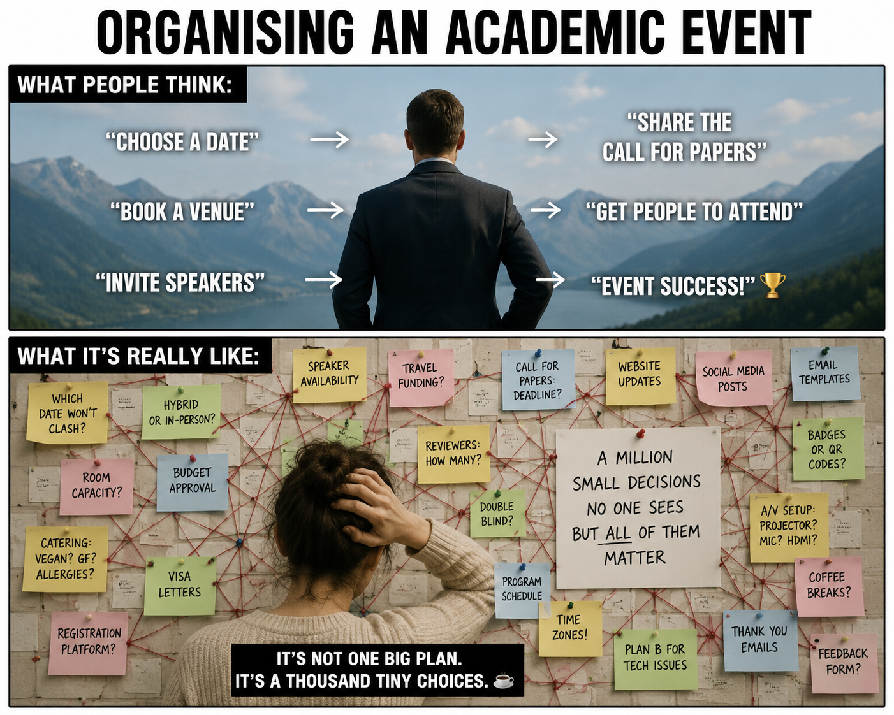
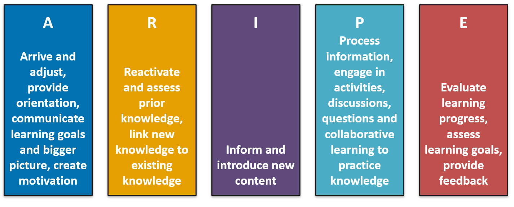
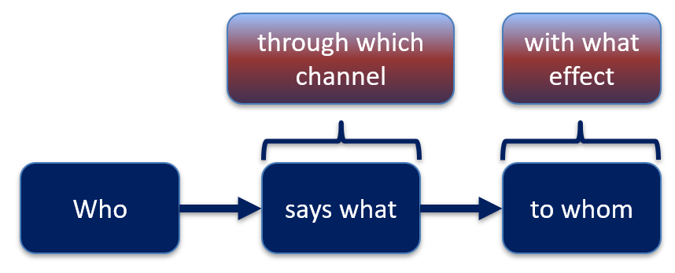
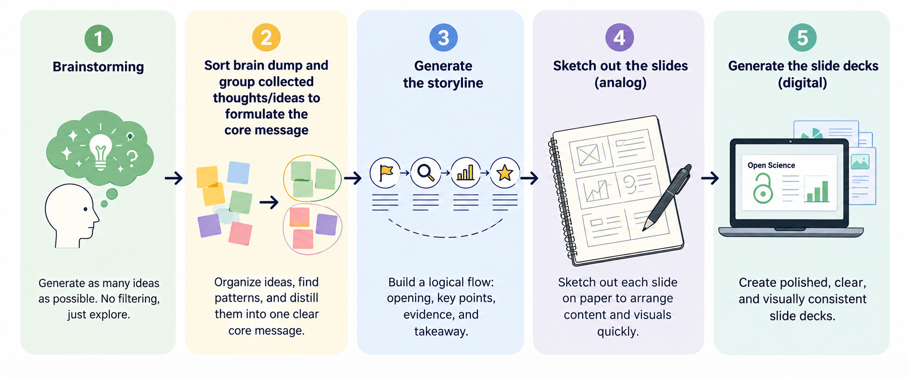
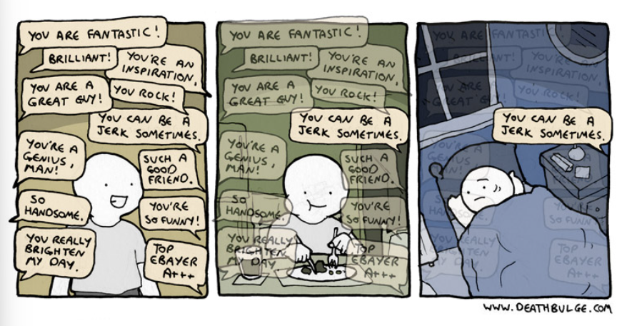

Concept planning for Open Research events
23/08/2026
Licence

This current work by Sarah von Grebmer zu Wolfsthurn, Sara Lil Middleton and Malika Ihle is licensed under a CC-BY-SA 4.0 Creative Commons Attribution 4.0 International SA License. It permits unrestricted re-use, distribution, and reproduction in any medium, provided the original work is properly cited. If you remix, transform, or build upon the material, you must distribute your contributions under the same license as the original.
Contribution statement
Creator: Von Grebmer zu Wolfsthurn, Sarah ( 0000-0002-6413-3895)
Reviewer: Middleton, Sara (0000-0001-5307-8029)
Consultant: Ihle, Malika ( 0000-0002-3242-5981)
Prerequisites - EDIT
Important
Before completing this submodule, please carefully read about the prerequisites.
| Prerequisite | Description | Link/Where to find it |
|---|---|---|
| Basic familiarity with Open Science practices | Examples: R, Quarto, Git, GitHub, preregistration, Open Access etc. | Click here to get familiar with Open Science first |
| Core didactic principles | A firm grasp on important didactic tools and elements | Download Link |
Questions from previous submodule
What are your questions from the previous session?
Key terms and definitions
- ARIPE+ scheme:
- Positive error framing:
- Error patterns in the learning process:
- Constructive feedback:
Key terms and definitions
- ARIPE+ scheme: A didactic framework for planning competency-based instruction that structures learning in five phases.
- Positive error framing: A didactic approach that views mistakes as learning opportunities and encourages learners to analzye their errors to boost understanding, skills and confidence.
- Error patterns in the learning process: Systematic mistakes rather than random failure, critical indicators for how learners think and where the misconceptions lie
- Constructive feedback: Information given to help someone improve their performance, skills, or behavior in a supportive and actionable way through describing observable behavior and offering next steps in a respectful way
Covered in this session
- Practical and logistical considerations when organizing an Open Research (OR) event
- ARIPE+ scheme to structure an OR event
- Fostering motivation
- Assessing prior/existing knowledge in your learners
- Providing useful feedback
Learning objectives
At the end of this session, you will be able to:
- Consider practical and logistical challenges of organizing an Open Research event
- Design an Open Research event according to the five phases of the ARIPE+ scheme (Städeli et al., 2013) to facilitate the learning process
- Apply techniques to enhance motivation in your learners
- Understand key elements of constructive feedback
Before we start: Survey time!
Scan the QR code and select the item Intro-Survey from the list.
Before we start: Survey time!
What is your level of experience with organizing Open Research events (e.g., a workshop, a seminar, lecture, lecture series..)?
I have never organized an Open Research event
I have organised 1-2 Open Research events
I have organized 3-10 Open Research events
I regularly organize Open Research events
Organizing Open Research events is all I do because it is my (literal) job
What is your level of familiarity with the ARIPE+ scheme?
I have never heard of it before.
I have heard of it but have never worked with it.
I have basic understanding and experience with it.
I am very familiar and have worked with it extensively.
Which of the following pedagogical elements do you feel most confident about in your teaching? (Select all that apply)
Probing and boosting motivation in your learners
Formulating and communicating learning objectives for your event
Conceptualizing and communicating the bigger vision of the event
Reactivating prior knowledge in your learners
Providing constructive feedback
None of the above
Discussion of survey results
What do we see in the results?
General framework of an Open Research event
What do you think are some initial points to consider when you plan an Open Research event? (3 minutes)
(event = workshop, course, lecture, seminar, talk etc.)
Logistics: Practical considerations

Made with generative AI.
Logistics: Practical considerations
Things to consider when organizing an event:
- Who could the target audience be?
- What are suitable dates and times?
- What does my audience need? (accessibility)
- What modality is suitable? (in-person, online, hybrid)
- What equipment/materials/software do I need?
- How can I book rooms/equipment?
- What are the administrative procedures (catering, room booking..)?
- How can I advertise my event?
- Check your working conditions: What is expected from me? How much time do I have?
Structuring your lesson: The ARIPE+ scheme (Städeli et al., 2013)

The “+” generally stands for elements connected to the learning environment, e.g., creating a supportive, accessible and safe environment, inclusivity, (body) language, see Städeli et al. (2013).
The ARIPE+ scheme
- A - Arrive and adjust: Provide orientation, outline journey and bigger picture, communicate learning objectives, create and foster motivation
- R - Reactivate: Reactivate and assess prior knowledge, link new content to existing content (constructivism)
- I - Inform: Introduce new content
- P - Process: Activities, tasks, discussions, questions, collaborative learning
- E - Evaluate: Check progress on learning objectives, feedback and assessment
ARIPE: Arrive and adjust
Orientation
- Provide orientation at the start and the end
- Accessibility and equipment needed (laptop, software installed, internet access …)
- Explain what materials will be needed (slides, cheatsheets, Moodle, GitHub) and where to find them)
- Highlight the modality (hybrid/in-person/online)
- Let your learners find common goals and shared interests
- Communicate milestones and important dates (deadlines, homework assignments, intermediate and final assessments)
- Clarify your expectations to the learners (attendance, homework, criteria for obtaining a certificate, assessments, general conduct…)
Icon from https://icons8.com/.
ARIPE: Arrive and adjust
Journey and bigger picture
- Clearly communicate where learners are headed and the vision or bigger picture
- e.g., “Today’s workshop helps you move from using open research practices yourself to learning how to teach these practices to the next generation of researchers using evidence-based methods.”
Icon from https://icons8.com/.
ARIPE: Arrive and adjust
Communicate learning objectives
- Clearly communicate the learning objectives
- State the learning objectives for the course/event series and provide an outlook on how you are planning to achieve them with your audience
- Examples:
- “Learners will compare traditional publishing models with open-access publishing models
- “Learners will create a reproducible research document using Quarto and publish it on GitHub”
Your turn! 5 minutes
Thought experiment: Imagine that you give a half-day workshop on R to a group of ten learners. In groups, write down concrete examples on how you could provide orientation at the start of the R workshop.
- Activity on finding common goals:
- Milestones to achieve during the workshop:
- Expectations:
ARIPE: Arrive and adjust
Motivation
Why does motivation (and demotivation!) matter when teaching and learning?
- Applying didactic tools can be unsuccessful if learners are demotivated
- Motivation (and demotivation) are contagious
- Motivation can be positively influenced by the instructor

Icon from https://icons8.com/.
Probing and enhancing motivation in your learners
Activity:
Think back to open research courses, workshops or seminars you attended in the past. Consider things that a teacher or trainer has said or done that you found either motivating or demotivating.
Try to think of at least two examples for each, and then share them with your neighbor. You have 5 minutes.
Motivation: Lessons
What can you do to enhance motivation in your learners?
Lesson 1: Explore why the topic matters
Learning is most successful when we care about the topic and when learners believe they can acquire a skills with reasonable time and effort.
What you can do:
Start by exploring what brought learners to this lesson and what motivates and interests them about the topic, e.g., through short questions or an interactive poll.
Lesson 2: Establish an early feeling of success
Kick-start the learning process by focusing on something useful and relevant that requires comparatively low effort and connects the materials to their own interests/goals.
What you can do:
Begin the lesson with something that is quick to learn and useful to your learners. Use examples and task from real-life scenarios, e.g., things you encountered before.
Lesson 3: Invite participation from learners
Encourage and foster an interactive environment for learners to ask questions, discuss difficulties and demonstrate prior knowledge.
- Actively engage learners early on in the lesson
What you can do:
Introduce an interactive activity early on in the lesson, e.g., “What brings you here today?” and then discuss in the big group.
Lesson 4: Encourage learners to learn from each other
Encourage learners to talk through the learning process with peers to maximize learning.
- Helps to (partially) level out potential differences in prior knowledge or experience
What you can do:
Integrate activities in pairs to foster the exchange.
Lesson 5: Acknowledge and integrate confusion
Make confusion an integral part of your teaching.
- Explore confusion with kindness
- Reward learners for sharing vulnerable information
What to do:
Integrate formative assessments or quizzes to pinpoint misunderstandings. Validate the thinking process and ask for collaboration from other learners on resolving any confusion.
Lesson 6: Praise effort and improvement
Leverage the power of “yet”.
- Evidence suggests that learner perseverance is best supported in the long term by praising effort or improvement rather than ability or performance.
What you can do:
Transform quests for help or support by learners by adding the word yet : “I cannot submit a preregistration yet”, “I do not understand yet how to create a GitHub repository”.
Lesson 7: You can be learning too!
Present yourself (the instructor) as a learner.
- Let your learners relate to you
- Make useful mistakes!
- Leverage your own mistakes or knowledge gaps for positive error framing
What you can do:
When discussing an activity involving coding, use the opportunity when you make mistakes to embrace them with enthusiasm and present them as a learning opportunity rather than an index for failure or incompetence.
Your turn! 5 minutes
Activity: Let us get back to our planned R workshop for a group of learners.
What are two concrete activities where you could actively boost motivation in your learners?
What could be two R-specific factors be that could demotivate your learners at the workshop?
ARIPE+ scheme
Städeli et al. (2013)
ARIPE: Reactivate
Important
Remember: Learners bring prior knowledge into the learning environment, can help or hinder learning.
Activity: How could you explore and activate prior knowledge on Open Research in your learners?
ARIPE: Reactivate
Methods to explore and activate prior knowledge
- Exchange with other teaching colleagues about the content of preceding workshops
- Pre-session surveys and quizzes to identify existing knowledge
- Brainstorm with learners
- Check for error patterns in the homework assignment
- Explicitly link new materials to elements from previous sessions
- Use analogies and examples that connect to existing knowledge
- …
Reactivating prior knowledge: analogies
Image generated with AI and adapted from Felix Schönbrodt.
Break! 5 minutes
ARIPE+ scheme
Städeli et al. (2013)
ARIPE: Inform
Communication model by Lasswell (1948):

Sapienza et al. (2015)
ARIPE: Inform
Designing slides………………..is a process:

Made with generative AI.
ARIPE+ scheme
Städeli et al. (2013)
ARIPE: Process
Practice and consolidate learning:
- Incorporate activities, discussions and collaborative learning
- Examples: Exercises, quiz, group work, summaries, homework assignments..
- Use activation methods for maximizing learning outcomes (next session!)
ARIPE+ scheme
Städeli et al. (2013)
ARIPE: Evaluate
Providing feedback

Providing feedback to learners to enhance learning
- Actively initiate feedback exchanges
- Provide targeted feedback early on in the process so that learners can adapt
- Be constructive in your feedback: What is a next step from here?
- Connect it to the learning objectives
- Balance positive and negative feedback
- Integrate peer feedback elements
O’Brien et al. (2022), Wu & Schunn (2023); https://zenodo.org/records/18905547
Feedback considerations
- Your words matter
- Giving and receiving feedback can be hard
- Lead the feedback conversation with empathy
- Consider the cultural context
https://zenodo.org/records/18905547. See also this article by Erin Meyer, author of The Culture Map.
ARIPE: Evaluate
Wrapping up
- Summarize and recap covered content
- Reiterate the learning objectives
- Highlight important take-home messages
- Small check-in assessment to see where your learners are at
- Clearly communicate expectations and timeframe for homework
- Provide an outlook on the following sessions
- Open the floor for questions
- “What are your questions?” instead of “Do you have any questions?”
Don’ts during an Open Research event
Do not:
- Overwhelm learners with Open Research facts early on
- Dive into complex or detailed technical discussions
- Talk with scorn about an Open Research tool or practice
- Pretend to know more than you do
- Do not use the word “just” or other demotivating words/phrases
- Express surprise at unawareness (“Funny, you have never heard about Git!?”)
- Take over the learner’s keyboard to complete the task yourself (e.g., when doing an R demonstration)
- …
Take-home messages
- Start from the beginning: logistics and practical considerations
- Structure your open research lesson so that it includes orientation, reactivation of prior knowledge, transfer and processing of content and wrapping up elements
- Actively foster motivation early on and throughout
- Assess and activate prior/existing knowledge about open research to boost the learning process
- Use feedback procedures as a foundational element of the learning process
Learning objectives - Recap
At the end of this session, you are now able to:
- Consider practical and logistical challenges of organizing an Open Research event ✅
- Design an Open Research event according to the five phases of the ARIPE+ scheme (Städeli et al., 2013) to facilitate the learning process ✅
- Apply techniques to enhance motivation in your learners ✅
- Understand key elements of constructive feedback ✅
To conclude: Survey time!
Scan the QR code and select the item End-Survey from the list.
To conclude: Survey time!
Which of the following pedagogical elements do you now feel most confident about in your teaching? (Select all that apply)
Probing and boosting motivation in your learners
Formulating and communicating learning objectives for your event
Conceptualizing and communicating the bigger vision of the event
Reactivating prior knowledge in your learners
Providing constructive feedback
None of the above
Which of the following elements or skills do you feel most curious about to implement in your future teaching?
Planning for the logistics of the workshop
Designing orientation activities
Boosting motivation through specific activities
Balancing positive and negative feedback
Other
On a scale of 1 to 5, how comfortable are you with using the ARIPE+ scheme to structure your future Open Research workshop? (1 = Not comfortable at all, 5 = Very comfortable)
5
4
3
2
1
Discussion of survey results
What do we see in the results?
References
Your own stereotypes and biases about learners
Tip
Want to know more about your own stereotypes and biases about learners? https://carpentries.github.io/instructor-training/09-eia.html#what-are-stereotypes.
LMU: Want to know more about designing slides?
For LMU students, researchers and staff:
Check out PROFiL and their courses on slide design!
Thanks!
For instructors
Additional considerations when teaching Open Research
- Some learners may prioritize immediate task-related knowledge over fundamental concepts, e.g., they have to submit a paper and want to learn about licencing
- Recognize diverse motivations: not all novices share the same starting interests or passion for open research practices, e.g., some are frustrated about code not being available, some have to “do open research” because the funders want it
Additional resources
Providing feedback:
Additional content slides
Useful principles for designing slides
Learning effect largest when visual and auditory channels are activated
Arrangement of elements matters: place the most important elements in the top left, arrange the rest according to importance
Play with contrast: Contrast two elements by changing the size, the shape, color, proximity or direction
Less is sometimes more: Consciously incorporate empty spaces into your slides to direct attention to the important elements
Bühler et al. (2017)
TODO

LMU Open Science Center